شبنم رضاپور
کسی که PDFها را راضی کرد محتوایشان را بیکموکاست لو بدهند.
این جزوه با استفاده از هوش مصنوعی تولید شده است. ممکن است شامل خطا یا برداشت نادرست باشد و نیازمند بررسی و بازبینی مجدد است.
در این جلسهٔ یکساعتونیمه، سلولهای سیستم ایمنی بهصورت فشرده و در قالب نکات کلیدی معرفی میشوند؛ جزئیات بیشتر در جلسات مربوط به هر موضوع بررسی خواهد شد. موضوعات جلسه شامل پراکندگی و منشأ سلولهای ایمنی، ردههای اصلی تمایز، ایمنی ذاتی و تطبیقی، فاگوسیتها، granulocyteها، dendritic cellها، lymphocyteها و ارائهٔ آنتیژن است. جلسهٔ بعد به بافتها و ارگانهای سیستم ایمنی میپردازد؛ آشنایی با سلولها دنبالکردن آن موضوع را آسانتر میکند.
سلولهای ایمنی در خون و لنف گردش میکنند. بخشی از آنها بهصورت سازمانیافته در اندامهای لنفاوی حضور دارند و گروهی دیگر بهطور دائم یا موقت در بافتها مستقر میشوند. سیتوکینها (cytokines)، آنتیبادیها و کمپلمان (complement) ارتباط و عملکرد این سلولها را تقویت میکنند.
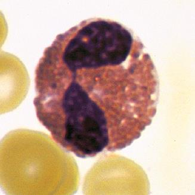
تصویر ۱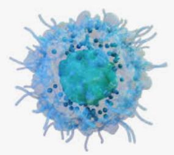
تصویر ۲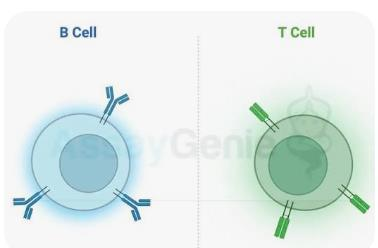
تصویر ۳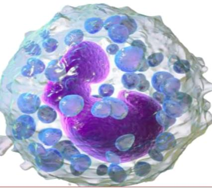
تصویر ۴تصویر ۵
پنج نوع اصلی گلبول سفید (white blood cell) یا لکوسیت (leukocyte) در خون محیطی عبارتاند از Neutrophil، Eosinophil، Lymphocyte، Monocyte و Basophil. در بررسی CBC، انواع گلبولهای سفید و شمارش آنها گزارش میشود. میانگین تعداد و محدودههای طبیعی درجشده در اسلاید بهازای هر microliter عبارتاند از:
| سلول | میانگین تعداد در هر microliter | محدودهٔ طبیعی در اسلاید |
|---|---|---|
| White blood cells (leukocytes) | 7400 | 4500–11,000 |
| Neutrophils | 4400 | 1800–7700 |
| Eosinophils | 200 | 0–450 |
| Basophils | 40 | 0–200 |
| Lymphocytes | 2500 | 1000–4800 |
| Monocytes | 300 | 0–800 |
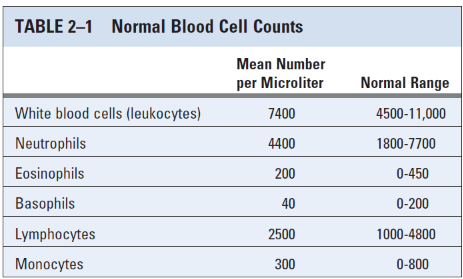
تصویر ۶درصدهای مطرحشده برای سلولهای خون محیطی عبارتاند از:
| سلول | درصدهای مطرحشده |
|---|---|
| Neutrophil | معمولاً حدود ۷۰٪؛ گاهی ۷۰ تا ۸۰٪؛ در بیان دیگر ۴۰ تا ۷۰٪ و میانگین نزدیک به ۷۰٪ |
| Lymphocyte | معمولاً ۲۰ تا ۴۰٪ |
| Monocyte | حدود ۱ تا ۸٪ |
| Basophil | در بعضی منابع صفر تا نیم و در بعضی منابع صفر تا یک درصد؛ ممکن است در نمونه دیده نشود |
برای این بحث لازم نیست وارد جزئیاتی مانند band شویم و تمرکز بر سلولهای اصلی است. بیشترین درصد مربوط به neutrophilهاست؛ پس از آن lymphocyteها، monocyteها و eosinophilها قرار میگیرند.
اگر درصد basophil حدود صفر تا یک باشد، معمولاً بهتنهایی نگرانکننده نیست؛ اما افزایش آن میتواند نشانهٔ بههمخوردن تعادل باشد و گاهی با بدخیمیهای خونی ارتباط دارد. یک استاد هماتولوژی هنگام دیدن basophil در لام خون محیطی، با لحنی طنزآمیز میگفت: «یا خدا، چه شوم هماتولوژی!» منظور این بود که افزایش آن باید جلب توجه کند.
در لام خون محیطی، گلبولهای سفید، گلبولهای قرمز و پلاکتها نیز دیده میشوند. افزایش basophil همراه با تغییر شمارشهای دیگر اهمیت بیشتری پیدا میکند؛ برای مثال، افزایش white blood cellها تا ۱۴ یا ۱۵ هزار، کاهش پلاکتها تا حدود ۵۰ هزار، یا کاهش red blood cellها از حدود ۵ میلیون به دو یا سه میلیون، در کنار هم میتواند نشانهٔ عدم تعادل باشد و باید به آن توجه کرد. جزئیات این موارد در هماتولوژی بررسی میشود؛ نکتهٔ اینجا آن است که basophil هنگام ارزیابی لام خون محیطی سلول مهمی است.
تقریباً همهٔ سلولهای ایمنی از سلول بنیادی خونساز (hematopoietic stem cell) منشأ میگیرند. این سلول در مغز استخوان قرار دارد و توان خودنوزایی (self-renewal) و تمایز دارد. چون میتواند به انواع مختلفی از سلولها تمایز یابد، multipotential یا چندتوان نامیده میشود. از آن دو مسیر اصلی تمایز شکل میگیرد: ردهٔ میلوئیدی (myeloid) و ردهٔ لنفوئیدی (lymphoid).
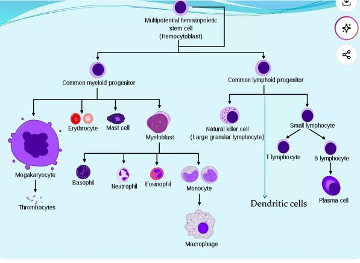
تصویر ۷تصویر ۸
سلولهایی که از stem cell منشأ میگیرند progenitor یا precursor نامیده میشوند. این دو واژه کاملاً یکسان نیستند: progenitorها سلولهای ابتداییتری هستند و به stem cell نزدیکترند؛ هرچه بهسمت سلولهای نهایی پیش میرویم، به precursorها میرسیم. طبق توضیح کلاس، precursorها به سلول نهایی نزدیکترند و دیگر خودشان نمیتوانند به سلول دیگری تقسیم شوند. بااینحال، در کتاب Abbas گاهی این دو اصطلاح تقریباً معادل هم بهکار میروند. در این درس وارد تفاوت دقیق آنها نمیشویم؛ تفاوتشان در هماتولوژی بیشتر بررسی میشود.
دو progenitor اصلی عبارتاند از common myeloid progenitor و common lymphoid progenitor؛ هرکدام میتوانند به چند ردهٔ سلولی دیگر تمایز یابند.
از myeloid progenitor، از جمله myeloblastها و سپس neutrophil، eosinophil، basophil و monocyte منشأ میگیرند.
بر اساس وجود گرانول:
در ردههای دیگر نیز erythrocyteها، یا red blood cellها، و megakaryocyteها شکل میگیرند؛ megakaryocyte سلول مادری پلاکتهاست.
فعالیت کلاسی: تعداد پلاکتهایی را که از یک megakaryocyte تولید میشود بررسی کنید. پاسخ را همان لحظه جستوجو نکنید و بعداً بهعنوان فعالیت ارائه دهید.
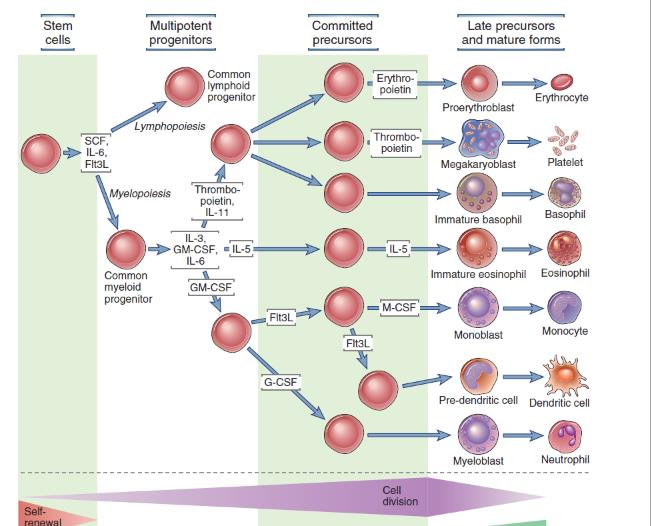
تصویر ۹در شاخهٔ lymphoid، تمایز ادامه مییابد و سلولهای T، B و NK از این رده منشأ میگیرند. NK cellها، T lymphocyteها و B lymphocyteها را نباید در ردهٔ myeloid قرار داد:
از سلولهای myeloid دارای نقش در ایمنی ذاتی میتوان basophil، neutrophil، eosinophil، monocyte، macrophage و dendritic cell را نام برد. ردهٔ erythroid و پلاکتها سلولهای سیستم ایمنی محسوب نمیشوند.
یک نمودار در کتاب Abbas فقط ردهٔ myeloid را با جزئیات نشان میدهد و ردهٔ lymphoid را در بر نمیگیرد؛ در آن تعداد زیادی سلول و مسیر میانی ترسیم شده است. به همین دلیل، همهٔ ردهها در یک اسلاید جمع نشدهاند.
Stem cellها و سلولهای دیگر با ترشح growth factorها و cytokineها بر تولید، بقا و تمایز سلولی اثر میگذارند.
در گذشته تصور میشد monokine فقط از monocyte و lymphokine فقط از lymphocyte تولید میشود؛ اما سلولهای زیادی، از جمله سلولهای غیرایمنی، cytokine میسازند.
سلولها از راه تماس مستقیم و انتقال سیگنال، و نیز از راه ترشح cytokine و اثرگذاری از فاصله، با یکدیگر ارتباط دارند. برای اثرکردن cytokine، سلول هدف باید receptor مربوط به آن را داشته باشد. در دستگاه عصبی و مغز نیز بین سلولها cross-talk وجود دارد.
Stem cell factor (SCF) یک cytokine و growth factor مهم است که در تنظیم تولید سلولهای خونی، بقای سلول و رشد بافت نقش دارد. SCF با اتصال به receptor سطحی c-Kit، که CD117 نیز نامیده میشود، اثر میگذارد. Flt3L مخفف FMS-like tyrosine kinase 3 ligand است.
تصویر ۷
تصویر ۸
نمودارها همهٔ سلولهای میانی را نشان نمیدهند و بین مراحل ترسیمشده سلولهای زیادی وجود دارد. در شکل، ردههای مختلف از یک سلول مشترک یا multipotent منشأ میگیرند و مسیرهایی به erythrocyte، پلاکت و basophil نشان داده شده است. مسیر eosinophil جداگانه است و IL-5 در آن نقش دارد.
تصویر ۹
در سیستم ایمنی دو بازوی اصلی وجود دارد:
سلولهای dendritic و cytokineها ارتباط مهمی میان این دو بازو برقرار میکنند.
تصویر ۱۰
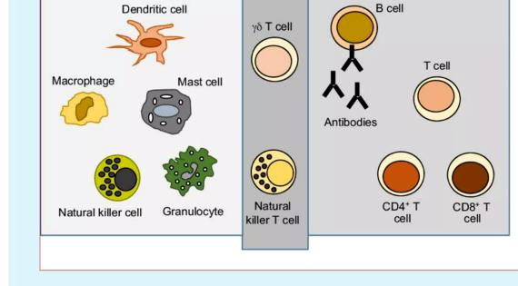
تصویر ۱۱تصویر آغاز درس سلولهای مختلف سیستم ایمنی را کنار هم نشان میدهد. CD4-positive T cell همان T helper است؛ CD8-positive T cell در ادامه توضیح داده میشود. Natural killer T cell یا NKT ویژگیهایی از NK و T cell دارد. NKT و γδ T cell را میتوان تا حدی میان ایمنی ذاتی و تطبیقی در نظر گرفت و آنها را پلی میان این دو بازو دانست.
تصویر ۱۰
تصویر ۱۱
Macrophageها از monocyteها منشأ میگیرند و از فاگوسیتهای مهم بافتی در ایمنی ذاتی هستند. وقتی بافتی ملتهب یا دچار عفونت میشود، macrophageها از نخستین سلولهاییاند که در ناحیه حضور پیدا میکنند؛ پس از آن، neutrophilهای زیادی به محل میآیند. Neutrophil با diapedesis از دیوارهٔ رگ و لایهٔ endothelial cell عبور میکند و به محل عامل عفونی میرود.
Neutrophil، macrophage و monocyte فاگوسیتوز میکنند؛ یعنی عامل بیگانه را میبلعند.
Macrophageها میکروبها، سلولهای مرده و بقایای بافتی را میبلعند و با ترشح cytokine التهاب را آغاز یا تنظیم میکنند. برخی macrophageها آنتیژن را به سلولهای T ارائه میکنند.
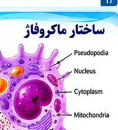
تصویر ۱۲پس از ورود monocyte به بافت، ممکن است فعال شود و به macrophage فعال تبدیل شود؛ بعضی تغییرات و cytokineها آن را بهسمت مقابله با عامل میکروبی و فاگوسیتوز میبرند. مسیر دیگر این است که monocyte بر اساس بافتی که در آن مستقر میشود، تمایز یابد و نام اختصاصی همان بافت را بگیرد. اینها macrophageهای مقیم بافت هستند.
نمودار منشأ و مسیر hematopoietic stem cell، monocyte/monoblast، monocyte و macrophage را نشان میدهد و شاخهای از common dendritic cell precursor را نیز به plasmacytoid DC میرساند. در آن، macrophageهای فعالشده و macrophageهای اختصاصی بافتی نیز نشان داده شدهاند.
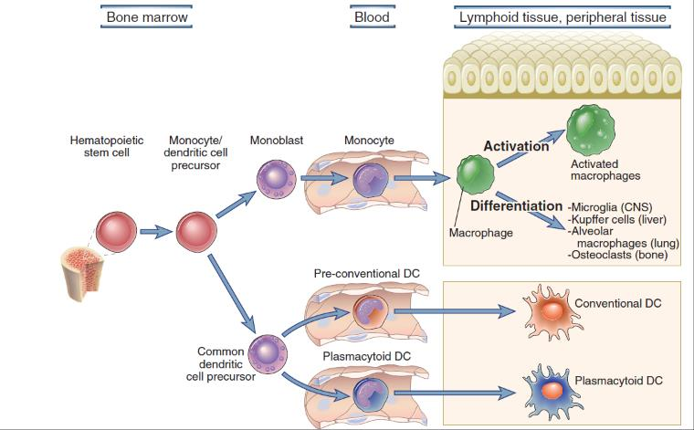
تصویر ۱۳Macrophageها در بافتهای مختلف مستقر میشوند و نام متناسب با بافت را میگیرند:
Osteoclastها در تخریب نقش دارند؛ آنها را از osteoblastها که نامشان نیز در درس مطرح میشود، متمایز کنید.
از پیشساز dendritic cell دو گروه اصلی شکل میگیرند:
تصویر ۱۳
مراحل فاگوسیتوز را میتوان بهترتیب دنبال کرد:
زوائدی از غشا و بدنهٔ سلول به نام pseudopodia میتوانند دور عامل میکروبی را بگیرند و receptor نیز ممکن است در اتصال نقش داشته باشد. Lysosome حاوی آنزیمهایی است که عامل میکروبی را تخریب میکنند. ادغام غشای phagosome و lysosome باعث میشود محتویات lysosome در phagolysosome بر میکروب اثر بگذارند.
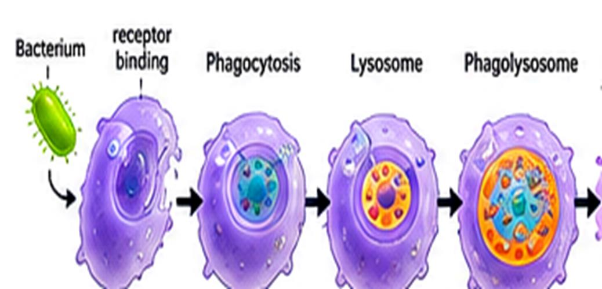
تصویر ۱۴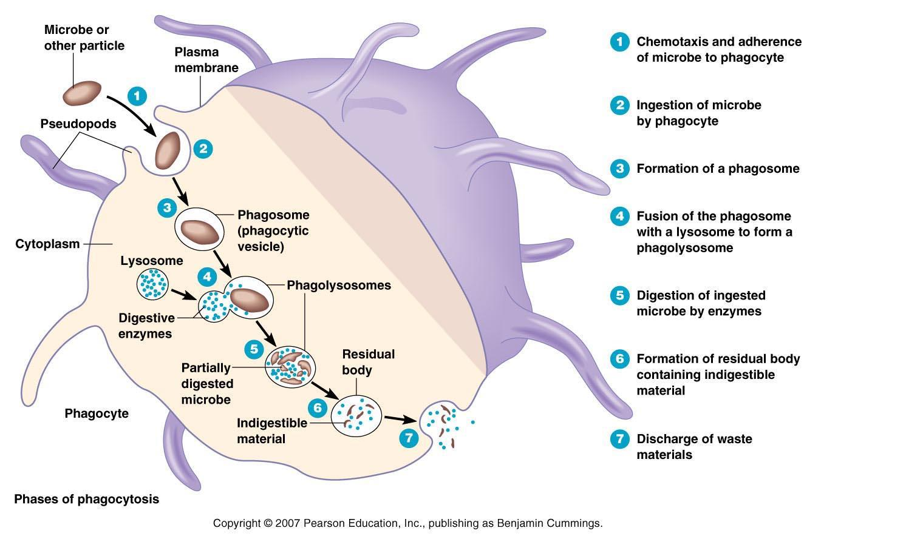
تصویر ۱۵در phagolysosome، افزون بر آنزیمهای گرانولی، گونههای فعال اکسیژن (reactive oxygen species; ROS) نیز در تخریب عامل میکروبی نقش دارند. افزایش سریع مصرف اکسیژن در این فرایند respiratory burst یا oxidative burst نام دارد. در توصیف درجشده در اسلاید، respiratory burst آزادسازی سریع ROS، از جمله superoxide anion (O₂⁻) و hydrogen peroxide (H₂O₂)، است. بنابراین آنزیمها و ROS هر دو در تخریب میکروب مشارکت دارند.
تصویر ۱۴
تصویر ۱۵
در اسلایدی با عنوان فعالیت کلاسیک و جایگزین macrophageها، Classically activated macrophage (M1) و Alternatively activated macrophage (M2) با پیامدهای متفاوت نشان داده شدهاند:
| ویژگی درجشده در اسلاید | M1: Classically activated macrophage | M2: Alternatively activated macrophage |
|---|---|---|
| محرکها | microbial TLR-ligands و IFN-γ | IL-13 و عبارتی که در اسلاید بهشکل IL-14 دیده میشود |
| فعالیتها و موارد درجشده | ROS، NO، lysosomal enzymes، IL-1، IL-12 و IL-23 | IL-10، proline، polyamines و TGF-β |
| پیامدهای نشاندادهشده | فعالیت میکروبکشی، التهاب، فاگوسیتوز و کشتن بسیاری از باکتریها و قارچها | anti-inflammatory و wound healing |
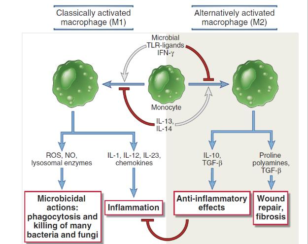
تصویر ۳۸سه گروه اصلی granulocyte عبارتاند از neutrophil، eosinophil و basophil. نوع گرانول، شکل هسته و عملکرد دفاعی در این سه گروه متفاوت است.
Neutrophilها فراوانترین leukocyteهای خون محیطی انساناند. هستهٔ چندقسمتی دارند؛ معمولاً سه تا پنج لوب دارد و در تصویر حدود پنج لوب دیده میشود. Neutrophilها در التهاب حاد و عفونتهای باکتریایی از نخستین سلولهای مهاجر به محل هستند و از مهمترین فاگوسیتهای ایمنی ذاتی به شمار میروند. گرانولهای اولیه و اختصاصی یا ثانویهٔ آنها مواد میکروبکش دارند و پس از فاگوسیتوز به تخریب عامل میکروبی کمک میکنند.
تصویر ۱۶
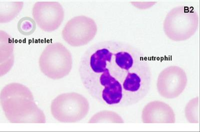
تصویر ۱۷Eosinophilها معمولاً هستهٔ دولوبی (bilobed) دارند و گرانولهای اختصاصی درشت و نارنجیـقرمز مشخصهٔ مهم مورفولوژیک آنهاست. Major basic protein (MBP) از اجزای مهم گرانولهای eosinophil است.
Eosinophilها حدود ۲ تا ۵ درصد white blood cellها را تشکیل میدهند و در دفاع علیه انگلهای بزرگ، مانند کرمها، و نیز در واکنشهای آلرژیک اهمیت دارند. منظور در این بحث عمدتاً انگلهای بزرگ است، نه تکیاختهها. افزایش شمار eosinophil در بعضی بیماریهای انگلی و آلرژیک دیده میشود. در بیماری آلرژیک، شمار آن ممکن است مثلاً بهجای حدود پنج درصد به هفت، هشت یا نه درصد برسد؛ اما افزایش آن بهتنهایی تشخیص قطعی نیست و بیماری انگلی را نیز باید در نظر گرفت.
افزایش eosinophil در خون eosinophilia نام دارد. بهطور کلی، پسوند -philia در نام سلول به افزایش آن اشاره میکند؛ برای نمونه، neutrophilia یعنی افزایش neutrophil در خون. Neutropenia به کاهش neutrophil گفته میشود.
تصویر ۱۸
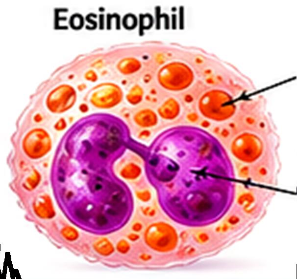
تصویر ۱۹Basophilها از کمتعدادترین leukocyteهای خون محیطی هستند. گرانولهای تیرهٔ آنها حاوی histamine و میانجیهای التهابی دیگرند. این سلولها در پاسخهای آلرژیک و واکنشهای وابسته به IgE نقش دارند؛ گرانولهای آزروفیلیک نیز در تصویر مطرح شدهاند.
Basophil از نظر ظاهر ممکن است به mast cell شبیه باشد. در basophil گرانولهای درشت و تیره گاهی هسته را میپوشانند؛ در mast cell، در بسیاری از موارد، گرانولهای درشت در اطراف هسته قرار میگیرند و هسته واضحتر دیده میشود. برای بهخاطرماندن شکل mast cell، آن را به فردی تشبیه کردهاند که وسط سرش کچل و موها دور سرش است: بخش وسط را هسته و اطراف را گرانولها در نظر بگیرید. این تشبیه بهتنهایی برای تشخیص قطعی کافی نیست و ظاهر basophil نیز میتواند متفاوت باشد.
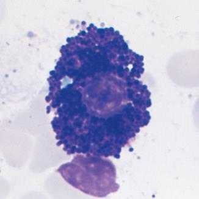
تصویر ۲۰در آلرژی، IgE اهمیت دارد. از پنج نوع آنتیبادی، IgE کمترین درصد را در خون دارد؛ اما در بیماری آلرژیک مقدار آن میتواند بسیار زیاد شود، حتی حدود صد برابر. افزایش IgE میتواند نشانهای از بیماری آلرژیک باشد.
افزایش basophil، افزایش eosinophil و افزایش IgE هر سه در بحث آلرژی مطرحاند؛ بااینحال، در این بحث افزایش IgE و eosinophil دو مورد مهمتر هستند. افزایش basophil هم اهمیت دارد، اما این دو مورد بیشتر مورد توجهاند.
تصویر ۲۰
Dendritic cellها از مهمترین سلولهای ارائهکنندهٔ آنتیژن (antigen-presenting cells; APCs) هستند و پلی مهم میان ایمنی ذاتی و تطبیقی به شمار میروند. آنها در بافت آنتیژن را دریافت و پردازش میکنند؛ سپس به اندام لنفاوی مهاجرت میکنند و سلولهای T نابالغ را فعال میکنند.
Dendritic cellهای conventional یا classic به immature dendritic cell (iDC) و mature dendritic cell (mDC) تقسیم میشوند. Langerhans cell (LC) در پوست در گروه immature آمده است. Plasmacytoid DC جداگانه در نظر گرفته میشود و با ویروسها ارتباط دارد.
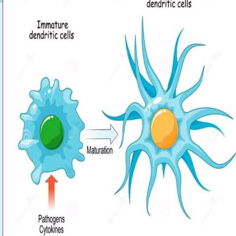
تصویر ۲۱در immature dendritic cell، زوائد ممکن است کمتر و نامنظم باشند و ظاهری شبیه pseudopod داشته باشند؛ این سلول توان فاگوسیتوز دارد. پس از برخورد با عامل بیگانه و بلعیدن آن، از محل مهاجرت میکند.
Mature dendritic cell زوائد بیشتری دارد که بلندتر و منظمترند و ظاهری شبیه خورشید با پرتوهای فراوان پیدا میکنند. پس از بلوغ، dendritic cell برای فاگوسیتوز آماده نیست و کار ارائهٔ آنتیژن را انجام میدهد. اختصارهای iDC و mDC در بعضی نسخههای اسلاید ممکن است جابهجا نوشته شده باشند؛ هنگام استفاده از فایل باید به این نکته توجه کرد.
برای نمونه، اگر پوست دست هنگام کار در باغ خراش بردارد، سد دفاعی پوست از بین میرود و عامل میکروبی میتواند وارد شود. پوست و مخاط از سدهای نخست ایمنی ذاتیاند؛ زیر پوست نیز macrophageها و dendritic cellها در خط دفاعی بعدی حضور دارند.
Dendritic cell از نخستین سلولهایی است که با عامل بیگانه مواجه میشود و از سلولهای فاگوسیتکننده است. پس از بلعیدن عامل میکروبی، در محل باقی نمیماند، بلکه از مسیر لنفی به نزدیکترین غدهٔ لنفاوی میرود؛ برای خراش دست، غدهٔ لنفاوی زیر بغل میتواند نزدیکترین غده باشد. در مسیر لنف ممکن است با T cell یا B cell برخورد کند، اما در غدهٔ لنفاوی تراکم این سلولها بیشتر است و فرصت زیادی برای تماس وجود دارد. Dendritic cell در آنجا آنتیژن را ارائه میکند. پس از مهاجرت و بلوغ، خاصیت فاگوسیتوزیاش را از دست میدهد و در نقش antigen-presenting cell عمل میکند.
Lymphocyteها سه گروهاند: B cell، T cell و Natural killer cell (NK cell). B و T پایهٔ اختصاصیت ایمنی اکتسابی را میسازند. NK از نظر شکل lymphocyte است، اما جزو ایمنی ذاتی محسوب میشود. این سلولها میان خون، لنف و اندامهای لنفاوی جابهجا میشوند.
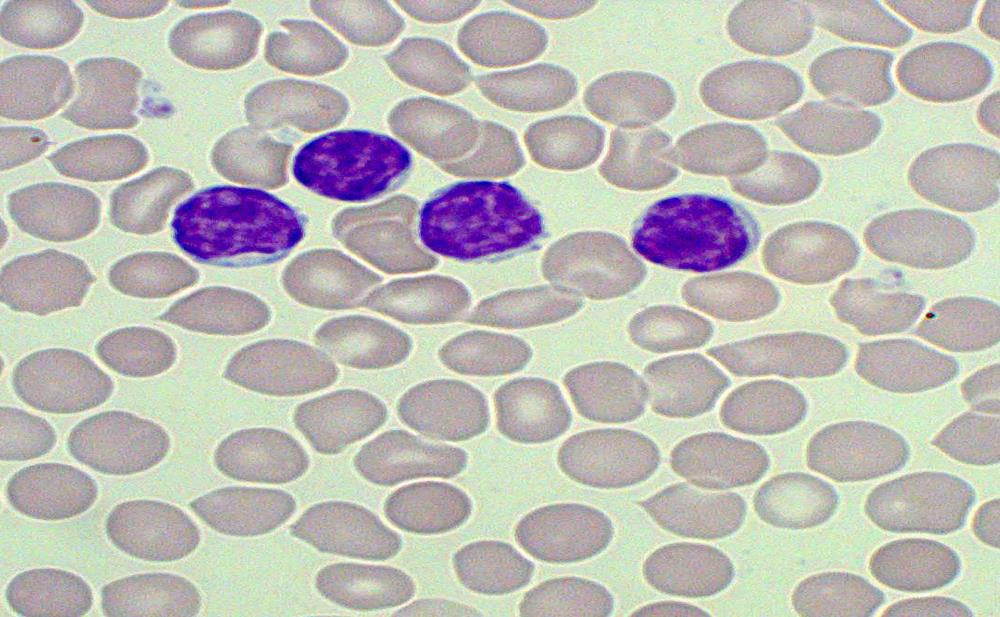
تصویر ۲۲تصویر ۲۳
B cell جزء اصلی ایمنی هومورال (humoral immunity) است. مراحل اصلی تکامل B cell در پستانداران در مغز استخوان انجام میشود و B cell با گیرندهٔ خود، B-cell receptor (BCR)، آنتیژن را مستقیماً شناسایی میکند. BCR به آنتیبادی غشایی شباهت دارد. آنتیبادی را immunoglobulin نیز مینامند؛ توضیح بیشتر دربارهٔ این نام در بخش آنتیبادیها ارائه میشود.
یک دسته آنتیبادی غشایی و یک دسته آنتیبادی ترشحی داریم؛ آنتیبادی ترشحی را plasma cell تولید میکند. B cell میتواند به plasma cell و memory B cell تمایز یابد. Memory B cell ممکن است سالها در بدن بماند و هنگام مواجههٔ دوباره با همان عامل میکروبی، پاسخ سریعتر و شدیدتری ایجاد کند.
چهار مولکول مهم سطح B cell عبارتاند از CD19، CD21، CD40 و MHC class II:
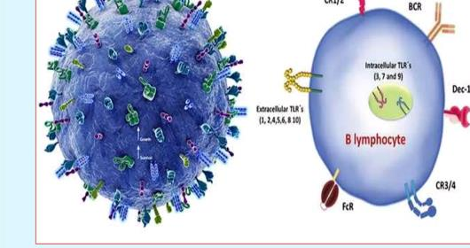
تصویر ۲۴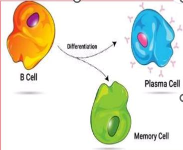
تصویر ۲۵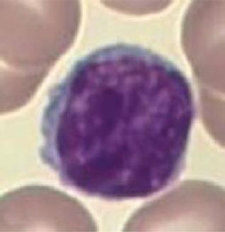
تصویر ۲۶تصویر ۲۷
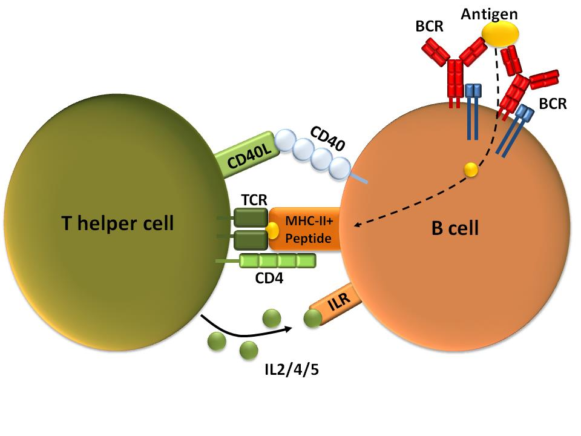
تصویر ۲۸اسلاید B lymphocyte subsets ردههای B-1 و B-2 را نشان میدهد. بیشتر B cellهایی که از stem cellهای منشأگرفته از کبد جنینی بهوجود میآیند، به ردهٔ B-1 تمایز مییابند. B lymphocyteهایی که پس از تولد از پیشسازهای مغز استخوان منشأ میگیرند، ردهٔ B-2 را ایجاد میکنند.
دو زیرگروه اصلی از پیشسازهای B-2 شکل میگیرند:
شکل همچنین مراحل Pre-B، immature B cell، transitional B cell و B-2 B cell را نشان میدهد.
فعالیت خارج از کلاس: دربارهٔ انواع B cell و هر subtype توضیح بنویسید؛ برای هر subtype دستکم پنج خط در نظر بگیرید.
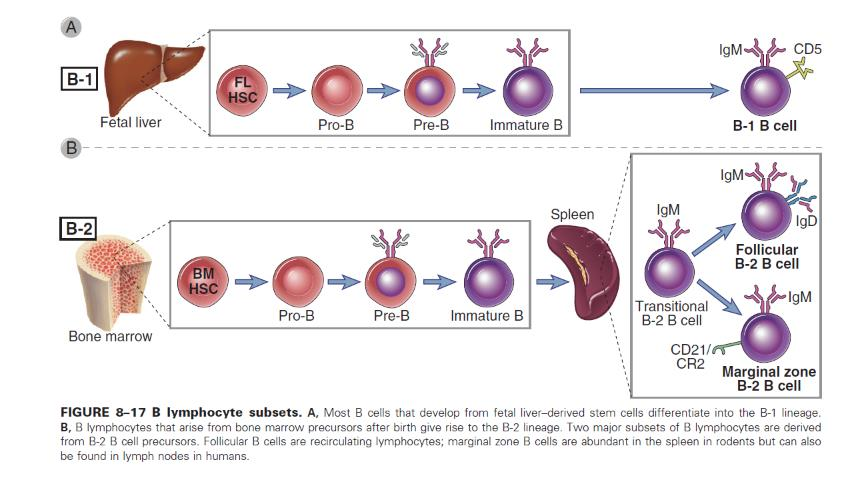
تصویر ۳۹T cellها از پیشسازهای مغز استخوان منشأ میگیرند، اما در thymus بالغ میشوند. گیرندهٔ آنها T-cell receptor (TCR) است؛ TCR پپتید آنتیژنی را در قالب MHC شناسایی میکند. T cellها از اجزای اصلی ایمنی سلولی (cell-mediated immunity) هستند و CD3، pan marker سلول T است.
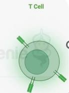
تصویر ۲۹TCR معمولاً از زنجیرههای alpha و beta تشکیل میشود. γδ T cellها بهجای آن زنجیرههای gamma و delta دارند و معمولاً نشانگرهای CD4 و CD8 را ندارند. در دوران جنینی γδ T cellها بیشترند؛ پس از تولد تعدادشان کمتر میشود. این سلولها حدود ۴ تا ۵ درصد T cellهای خون محیطی را تشکیل میدهند؛ مقدار نزدیک به ۴ درصد نیز در اسلاید ذکر شده است. بیشتر T cellهای بدن alpha-beta هستند و حدود ۹۵ تا ۹۶ درصد را تشکیل میدهند. γδ T cellها تا حدی میان ایمنی ذاتی و تطبیقی قرار میگیرند و در عملکرد معمول ایمنی اکتسابی نقش پررنگی ندارند.
انواع اصلی alpha-beta T cell عبارتاند از:
NKT cellها ویژگیهایی از T و NK دارند و گیرندهٔ T آنها عمدتاً آنتیژنهای گلیکولیپیدی ارائهشده بهوسیلهٔ CD1 را شناسایی میکند.
تصویر ۲۹
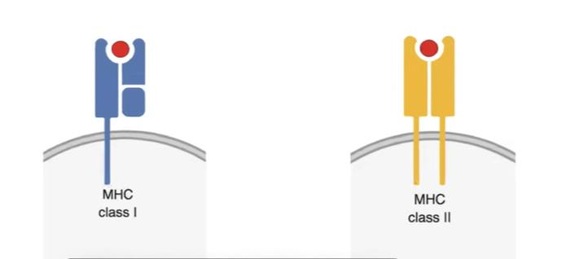
تصویر ۳۰در ویدیویی دربارهٔ T cytotoxic، یک سلول T cytotoxic در بالا و یک سلول آلوده در پایین دیده میشود. میان این دو سلول یک پل سیتوپلاسمی تشکیل میشود و Serine proteases، از جمله موادی مانند granzymes، آزاد و وارد سلول آلوده میشوند. سلول آلوده شروع به جمعشدن میکند؛ در توصیف ویدیو، آنزیمها در غشای سطحی سوراخهایی ایجاد میکنند، محتویات سلول بیرون میریزد و T cell میتواند سراغ سلول دیگری برود. در بدن نیز فرایندهای طبیعیای در جریاناند که به پاکسازی پاتوژنها کمک میکنند. ویدیو با زیرنویس هوش مصنوعی عرضه شده است؛ زیرنویس ممکن است بعضی واژهها، مانند T cell یا cytotoxic، را جابهجا نشان دهد.
برای آشنایی بیشتر با T cytotoxic، ویدیو پس از پایان صحبتها پیشنهاد شده است. این سلول یکی از انواع T cell است که در این جلسه معرفی میشود و در جلسات بعد جزئیات بیشتری دربارهاش گفته خواهد شد. نام تهیهکننده و مؤسسه مطابق گفتار بالا نیازمند بررسی است.
NK cellها lymphocyteهای ایمنی ذاتیاند و برای شناسایی هدف به گیرندهٔ اختصاصی مانند BCR یا TCR وابسته نیستند. آنها در کنترل زودهنگام عفونتهای ویروسی و برخی تومورها نقش دارند و IFN-γ یکی از cytokineهای مهم تولیدشده بهوسیلهٔ آنهاست. NK cellها markerهای CD16 و CD56 دارند. Perforin و granzymes در القای apoptosis سلول هدف نقش دارند.
تعادل میان سیگنالهای receptorهای فعالکننده و مهارکننده فعالیت NK را تعیین میکند و کاهش MHC class I میتواند حساسیت سلول هدف به NK را افزایش دهد.
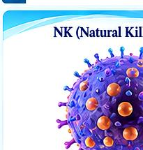
تصویر ۳۴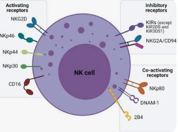
تصویر ۳۵APC یا antigen-presenting cell آنتیژن را ارائه میکند؛ در این درس منظور ارائهٔ آنتیژن به T cell است.
سه professional APC عبارتاند از dendritic cell، macrophage و B cell. Professional یعنی ارائهٔ آنتیژن از کارهای اصلی و حرفهای این سلولهاست؛ در مقابل، برای سلولی که این کار وظیفهٔ اصلیاش نیست، از non-professional استفاده میشود. در اسلاید، همهٔ سلولهای هستهدار دارای MHC class I و professional APCها دارای MHC class II و costimulatory molecules معرفی شدهاند.
تصویر ۳۰
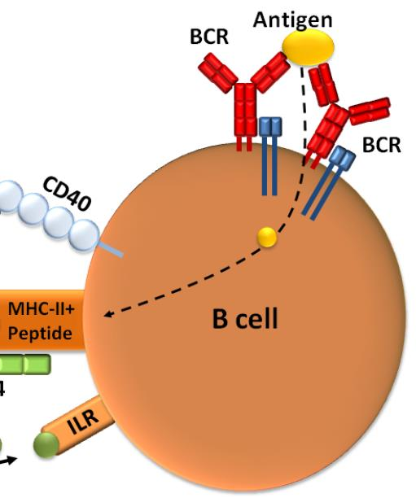
تصویر ۳۱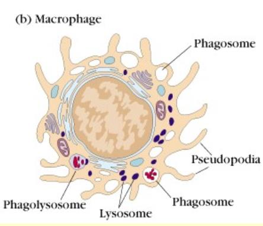
تصویر ۳۲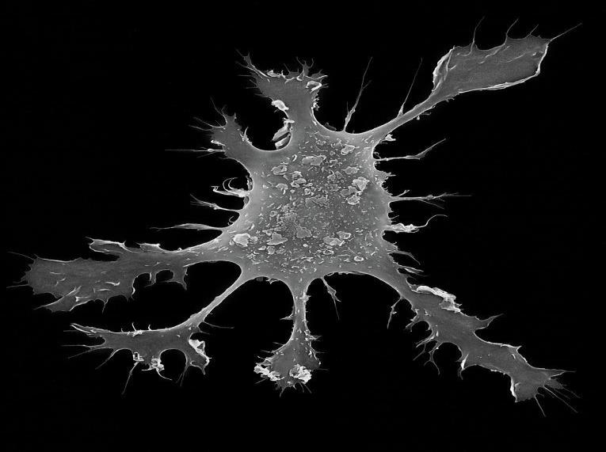
تصویر ۳۳APC پپتید را روی MHC نمایش میدهد:
فعالشدن T cell به سیگنالهای آنتیژنی و کمکتحریکی نیاز دارد؛ cytokineها نیز نوع و شدت پاسخ بعدی را هدایت میکنند. پس از شناسایی آنتیژن و دریافت سیگنالهای لازم، T cell پاسخ بعدی را پیش میبرد.
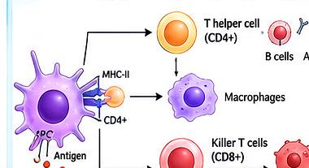
تصویر ۴۲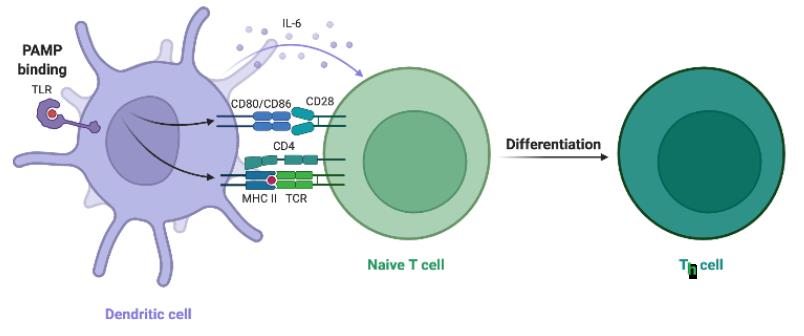
تصویر ۴۳Follicular dendritic cellها (FDCs) را با dendritic cellهایی که آنتیژن را به T lymphocyte ارائه میکنند یکی نگیرید؛ منشأ و عملکرد این دو متفاوت است. FDCها سلولهایی دارای زوائد غشاییاند که در germinal centerهای فولیکولهای لنفاوی گرههای لنفاوی، طحال و بافتهای لنفاوی مخاطی دیده میشوند. آنها از bone marrow precursorها منشأ نمیگیرند و با antigen-presenting dendritic cellهایی که آنتیژن را به T cell ارائه میکنند، ارتباطی ندارند.
FDC آنتیژنهایی را که به antibodyها یا complement products متصل شدهاند به دام میاندازد و روی سطح خود نگه میدارد تا B lymphocyteها آنها را شناسایی کنند. توضیح اسلاید دربارهٔ FDC برای امتحان مهم است.
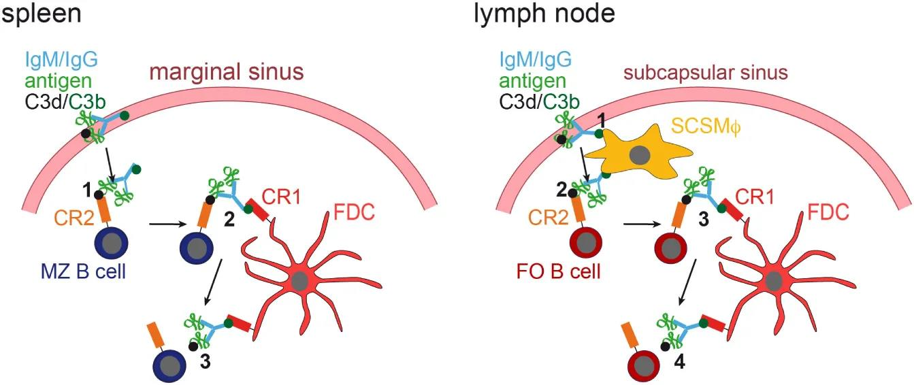
تصویر ۴۰فعالیت خارج از کلاس: دربارهٔ انواع macrophage پس از فعالشدن و نوع فعالیت مربوط به هرکدام توضیح دهید.
در جمعبندی نقشها:
ایمنی مؤثر حاصل همکاری سلولهای ذاتی و تطبیقی است. هر سلول ساختار و وظیفهٔ تخصصی دارد، اما عملکرد سلولها به یکدیگر وابسته است. Cytokineها و تماسهای سلولی شبکهٔ ارتباطی این مجموعه را میسازند و هدف نهایی، حذف عامل خطر با حداقل آسیب به بافت خودی است.
تصویر ۳۸
تصویر ۳۹
تصویر ۳۶
تصویر ۳۷
تصویر ۴۱
| سلول | میانگین تعداد در هر microliter | محدودهٔ طبیعی در اسلاید | درصدهای مطرحشده |
|---|---|---|---|
| White blood cells (leukocytes) | 7400 | 4500–11,000 | — |
| Neutrophils | 4400 | 1800–7700 | معمولاً حدود ۷۰٪؛ گاهی ۷۰ تا ۸۰٪؛ در بیان دیگر ۴۰ تا ۷۰٪ و میانگین نزدیک به ۷۰٪ |
| Eosinophils | 200 | 0–450 | — |
| Basophils | 40 | 0–200 | صفر تا نیم یا صفر تا یک درصد؛ ممکن است در نمونه دیده نشود |
| Lymphocytes | 2500 | 1000–4800 | معمولاً ۲۰ تا ۴۰٪ |
| Monocytes | 300 | 0–800 | حدود ۱ تا ۸٪ |
| رده یا گروه | سلولها و ویژگی ذکرشده در درس |
|---|---|
| Hematopoietic stem cell | در مغز استخوان قرار دارد؛ توان self-renewal و تمایز دارد و multipotential است. |
| Myeloid | یکی از دو مسیر اصلی تمایز؛ از آن، از جمله، neutrophil، eosinophil، basophil و monocyte منشأ میگیرند. |
| Lymphoid | مسیر اصلی دیگر؛ سلولهای T، B و NK از آن منشأ میگیرند. B و T اجزای ایمنی اکتسابی یا اختصاصیاند؛ NK جزئی از ایمنی ذاتی است. |
| Myeloid با نقش در ایمنی ذاتی | Basophil، neutrophil، eosinophil، monocyte، macrophage و dendritic cell |
| Erythroid و پلاکتها | سلولهای سیستم ایمنی محسوب نمیشوند؛ megakaryocyte سلول مادری پلاکتهاست. |
| Granulocyte | Neutrophil، eosinophil و basophil؛ گرانولهای واضح سیتوپلاسمی دارند. |
| Agranulocyte | Monocyte و lymphocyte؛ در monocyte ممکن است گرانولهای ریز و اندکی وجود داشته باشد، اما واضح نیستند. |
| Progenitor و precursor | Progenitor ابتداییتر و نزدیکتر به stem cell است؛ precursor به سلول نهایی نزدیکتر است. در کتاب Abbas گاهی تقریباً معادل بهکار میروند. |
| عامل | نقش یا ارتباط ذکرشده در درس |
|---|---|
| GM-CSF | بر سلولهای granulocyte و monocyte اثر میگذارد. |
| G-CSF | عمدتاً با تولید neutrophil مرتبط است؛ در بعضی منابع اثر بر هر سه ردهٔ granulocyte ذکر شده است. |
| M-CSF | با ردهٔ monocyte ارتباط دارد؛ مسیر monoblast و سپس monocyte را پیش میبرد. |
| Flt3L | میتواند سلول را بهسمت dendritic cell ببرد؛ مخفف FMS-like tyrosine kinase 3 ligand است. |
| IL-5 | در تولید eosinophil نقش دارد. |
| Thrombopoietin و IL-11 | در تولید و تمایز سلولهایی که به پلاکت تبدیل میشوند نقش دارند. |
| SCF | Cytokine و growth factor مهم در تنظیم تولید سلولهای خونی، بقای سلول و رشد بافت؛ با اتصال به c-Kit/CD117 اثر میگذارد. |
| بازوی ایمنی یا گروه | ویژگی و ارتباط ذکرشده در درس |
|---|---|
| Innate immunity | پاسخ سریع و از پیش آماده؛ NK از اجزای این بازو است. |
| Adaptive immunity | پاسخ اختصاصی و دارای حافظه؛ B و T از اجزای این بازو هستند. |
| ارتباط دو بازو | Dendritic cellها و cytokineها ارتباط مهمی برقرار میکنند. |
| NKT و γδ T cell | تا حدی میان ایمنی ذاتی و تطبیقی قرار میگیرند و میتوان آنها را پلی میان دو بازو دانست. |
| محل | Macrophage مقیم بافت |
|---|---|
| کبد | Kupffer cells |
| سیستم عصبی مرکزی (CNS) | microglia |
| ریه | alveolar macrophages |
| استخوان | osteoclastها؛ از دودمان monocyte/macrophage هستند و در تخریب نقش دارند. |
| مرحله | رویداد |
|---|---|
| ۱ | شناسایی و اتصال میکروب به receptorهای فاگوسیت |
| ۲ | احاطهشدن میکروب و تشکیل phagosome |
| ۳ | ادغام phagosome با lysosome و تشکیل phagolysosome |
| ۴ | تخریب میکروب و دفع مواد باقیمانده |
| ویژگی درجشده در اسلاید | M1: Classically activated macrophage | M2: Alternatively activated macrophage |
|---|---|---|
| محرکها | microbial TLR-ligands و IFN-γ | IL-13 و عبارتی که در اسلاید بهشکل IL-14 دیده میشود |
| فعالیتها و موارد درجشده | ROS، NO، lysosomal enzymes، IL-1، IL-12 و IL-23 | IL-10، proline، polyamines و TGF-β |
| پیامدهای نشاندادهشده | فعالیت میکروبکشی، التهاب، فاگوسیتوز و کشتن بسیاری از باکتریها و قارچها | anti-inflammatory و wound healing |
| Granulocyte | ویژگیهای ذکرشده در درس |
|---|---|
| Neutrophil | فراوانترین leukocyte خون محیطی؛ هستهٔ چندقسمتی، معمولاً سه تا پنج لوب؛ مهم در التهاب حاد، عفونت باکتریایی و فاگوسیتوز؛ گرانولهای اولیه و اختصاصی یا ثانویه مواد میکروبکش دارند. |
| Eosinophil | معمولاً هستهٔ دولوبی؛ گرانولهای اختصاصی درشت نارنجیـقرمز؛ MBP از اجزای مهم گرانول؛ حدود ۲ تا ۵٪ white blood cellها؛ مهم در دفاع علیه انگلهای بزرگ و واکنشهای آلرژیک. |
| Basophil | از کمتعدادترین leukocyteهای خون محیطی؛ گرانولهای تیره حاوی histamine و میانجیهای التهابی؛ نقش در پاسخهای آلرژیک و واکنشهای وابسته به IgE. |
| ویژگی ظاهری | Basophil | Mast cell |
|---|---|---|
| گرانولها و هسته | گرانولهای درشت و تیره گاهی هسته را میپوشانند. | در بسیاری از موارد گرانولهای درشت در اطراف هسته قرار میگیرند و هسته واضحتر دیده میشود. |
| یادآوری مورفولوژی | ظاهر میتواند متفاوت باشد. | تشبیه به فردی که وسط سرش کچل و موها دور سرش است: بخش وسط هسته و اطراف گرانولهاست؛ این تشبیه بهتنهایی تشخیص قطعی نیست. |
| مورد مطرحشده در آلرژی | توضیح ذکرشده در درس |
|---|---|
| IgE | از پنج نوع آنتیبادی کمترین درصد را در خون دارد؛ در بیماری آلرژیک مقدار آن میتواند حتی حدود صد برابر شود. |
| Eosinophil | شمار آن ممکن است در بیماری آلرژیک بالا برود؛ افزایش آن بهتنهایی تشخیص قطعی نیست و بیماری انگلی نیز باید در نظر گرفته شود. |
| Basophil | افزایش آن نیز مطرح است، اما در این بحث افزایش IgE و eosinophil بیشتر مورد توجهاند. |
| گروه یا مرحله | ویژگی ذکرشده در درس |
|---|---|
| Conventional یا classic dendritic cell | به immature و mature تقسیم میشود. |
| Langerhans cell (LC) | در پوست و در گروه immature آمده است. |
| Plasmacytoid DC | ردهای جداگانه و مرتبط با ویروسهاست. |
| Immature dendritic cell (iDC) | زوائد ممکن است کمتر و نامنظم، شبیه pseudopod، باشند؛ توان فاگوسیتوز دارد و پس از برخورد با عامل بیگانه و بلعیدن آن مهاجرت میکند. |
| Mature dendritic cell (mDC) | زوائد بیشتر، بلندتر و منظمترند؛ پس از بلوغ برای فاگوسیتوز آماده نیست و آنتیژن را ارائه میکند. |
| نوع یا زیرگروه | جایگاه، منشأ یا ویژگی ذکرشده در درس |
|---|---|
| B cell | از پایههای اختصاصیت ایمنی اکتسابی؛ جزء اصلی ایمنی هومورال؛ آنتیژن را با BCR مستقیماً شناسایی میکند. |
| T cell | از پایههای اختصاصیت ایمنی اکتسابی؛ از پیشساز مغز استخوان منشأ میگیرد و در thymus بالغ میشود. |
| NK cell | از نظر شکل lymphocyte است، اما جزو ایمنی ذاتی محسوب میشود. |
| B-1 | بیشتر B cellهای حاصل از stem cellهای منشأگرفته از کبد جنینی به این رده تمایز مییابند. |
| B-2 | از B lymphocyteهایی ایجاد میشود که پس از تولد از پیشسازهای مغز استخوان منشأ میگیرند. |
| Follicular B cell | از زیرگروههای اصلی حاصل از پیشسازهای B-2؛ lymphocyteهای در حال recirculation هستند. |
| Marginal zone B cell | از زیرگروههای اصلی حاصل از پیشسازهای B-2؛ در جوندگان در طحال فراوان و در انسان در گرههای لنفاوی یافت میشود. |
| مراحل نشاندادهشده در شکل | Pre-B، immature B cell، transitional B cell و B-2 B cell |
| مولکول | نقش یا ارتباط ذکرشده در درس |
|---|---|
| CD19 | همراه با CD21 در تقویت سیگنال فعالسازی B cell نقش دارد؛ pan marker سلول B است. |
| CD21 | همراه با CD19 در تقویت سیگنال فعالسازی B cell نقش دارد. |
| CD40 | روی B cell با CD40L روی T helper تعامل میکند. |
| MHC class II | برای ارائهٔ آنتیژن به T helper ضروری است. |
| نوع T cell | ویژگی یا عملکرد ذکرشده در درس |
|---|---|
| T helper یا CD4-positive T cell | پاسخ ایمنی را هدایت میکند. |
| T cytotoxic یا CD8-positive T cell | سلولهای آلوده و توموری را از بین میبرد. |
| Regulatory T (Treg) | پاسخ بیشازحد را مهار و به حفظ تحمل ایمنی کمک میکند؛ پیشتر T suppressor نیز نامیده میشد. |
| Memory T | در مواجههٔ مجدد پاسخ سریعتری ایجاد میکند. |
| γδ T cell | زنجیرههای gamma و delta دارد، معمولاً CD4 و CD8 ندارد؛ در دوران جنینی بیشتر است و پس از تولد تعدادش کمتر میشود؛ حدود ۴ تا ۵٪ T cellهای خون محیطی را تشکیل میدهد، درحالیکه در اسلاید مقدار نزدیک به ۴٪ نیز آمده است. بیشتر T cellها alpha-beta و حدود ۹۵ تا ۹۶٪ هستند. |
| NKT cell | ویژگیهایی از T و NK دارد؛ گیرندهٔ T آن عمدتاً آنتیژنهای گلیکولیپیدی ارائهشده بهوسیلهٔ CD1 را شناسایی میکند. |
| ویژگی NK cell | توضیح |
|---|---|
| جایگاه ایمنی | Lymphocyte ایمنی ذاتی |
| شناسایی هدف | برای شناسایی هدف به گیرندهٔ اختصاصی مانند BCR یا TCR وابسته نیست. |
| نقشها | کنترل زودهنگام عفونتهای ویروسی و برخی تومورها |
| Cytokine مطرحشده | IFN-γ |
| Markerها | CD16 و CD56 |
| Perforin و granzymes | در القای apoptosis سلول هدف نقش دارند. |
| تنظیم فعالیت | تعادل سیگنالهای receptorهای فعالکننده و مهارکننده |
| MHC class I | کاهش آن میتواند حساسیت سلول هدف به NK را افزایش دهد. |
| نوع سلول یا گروه | مولکولها یا ویژگی ذکرشده در درس |
|---|---|
| همهٔ سلولهای هستهدار | دارای MHC class I |
| Professional APCها | Dendritic cell، macrophage و B cell؛ دارای MHC class II و costimulatory molecules |
| Non-professional | ارائهٔ آنتیژن وظیفهٔ اصلی آن سلول نیست. |
| T cell | MHC ارائهکنندهٔ پپتید که عمدتاً شناسایی میشود |
|---|---|
| CD4-positive T helper | MHC class II |
| CD8-positive cytotoxic T | MHC class I |
| ویژگی | Follicular dendritic cell (FDC) | Antigen-presenting dendritic cell مطرحشده در درس |
|---|---|---|
| منشأ | از bone marrow precursorها منشأ نمیگیرد. | در این درس در چارچوب ارائهٔ آنتیژن به T cell مطرح میشود. |
| محل یا ارتباط مکانی | Germinal centerهای فولیکولهای لنفاوی گرههای لنفاوی، طحال و بافتهای لنفاوی مخاطی | در بافت آنتیژن را دریافت و پردازش میکند و سپس به اندام لنفاوی مهاجرت میکند. |
| کارکرد ذکرشده | آنتیژنهای متصل به antibodyها یا complement products را نگه میدارد تا B lymphocyteها شناسایی کنند. | آنتیژن را به T cell ارائه میکند. |
| سلول | نقش جمعبندیشده |
|---|---|
| Neutrophil و macrophage | با فاگوسیتوز میکروبها را از بین میبرند. |
| Dendritic cell | آنتیژن را ارائه میکند و پاسخ T را آغاز میکند. |
| B cell | آنتیبادی تولید میکند و حافظهٔ هومورال ایجاد میکند. |
| T cell و NK cell | در نابودی سلولهای هدف نقش دارند. |
دو مسیر اصلی تمایز hematopoietic stem cell را نام ببرید و توضیح دهید هر مسیر چه جایگاهی در منشأ سلولهای ایمنی مطرحشده در درس دارد.
دو مسیر اصلی myeloid و lymphoid هستند. از ردهٔ lymphoid سلولهای T، B و NK منشأ میگیرند؛ از سلولهای myeloid دارای نقش در ایمنی ذاتی میتوان basophil، neutrophil، eosinophil، monocyte، macrophage و dendritic cell را نام برد.
مراحل فاگوسیتوز را بهترتیب توضیح دهید و نقش phagosome، lysosome و phagolysosome را بیان کنید.
ابتدا میکروب بهوسیلهٔ receptorهای فاگوسیت شناسایی و متصل میشود. سلول آن را احاطه میکند و phagosome تشکیل میشود. سپس phagosome با lysosome ادغام شده و phagolysosome بهوجود میآید؛ در آنجا عامل میکروبی تخریب و مواد باقیمانده دفع میشوند.
Immature و mature dendritic cell را از نظر زوائد و عملکرد فاگوسیتوز و ارائهٔ آنتیژن مقایسه کنید.
Immature dendritic cell ممکن است زوائد کمتر و نامنظم، شبیه pseudopod، داشته باشد و توان فاگوسیتوز دارد؛ پس از برخورد با عامل بیگانه و بلعیدن آن از محل مهاجرت میکند. Mature dendritic cell زوائد بیشتر، بلندتر و منظمتر دارد؛ پس از بلوغ برای فاگوسیتوز آماده نیست و کار ارائهٔ آنتیژن را انجام میدهد.
چهار مولکول مهم سطح B cell را نام ببرید و نقش یا ارتباط هرکدام را شرح دهید.
CD19 و CD21 در تقویت سیگنال فعالسازی B cell نقش دارند و CD19 pan marker سلول B است. CD40 روی B cell با CD40L روی T helper تعامل میکند. MHC class II برای ارائهٔ آنتیژن به T helper ضروری است.
سه professional APC را نام ببرید و رابطهٔ MHC class I و MHC class II با شناسایی آنتیژن بهوسیلهٔ T cellها را شرح دهید.
سه professional APC عبارتاند از dendritic cell، macrophage و B cell. در اسلاید، همهٔ سلولهای هستهدار دارای MHC class I و professional APCها دارای MHC class II و costimulatory molecules معرفی شدهاند. CD4-positive T helper عمدتاً آنتیژن ارائهشده روی MHC class II را میشناسد و CD8-positive cytotoxic T عمدتاً آنتیژن ارائهشده روی MHC class I را میشناسد.
کدام گزینه دو ردهٔ اصلی تمایز hematopoietic stem cell را درست نشان میدهد؟
دو مسیر اصلی تمایز hematopoietic stem cell، ردهٔ myeloid و ردهٔ lymphoid هستند.
کدام گزینه دربارهٔ granulocyteها مطابق درس است؟
Neutrophil، eosinophil و basophil بهدلیل داشتن گرانولهای واضح سیتوپلاسمی granulocyte هستند.
کدام cytokine در تولید eosinophil نقش دارد؟
IL-5 در تولید eosinophil نقش دارد.
در مسیر فاگوسیتوز، ادغام phagosome با lysosome چه ساختاری ایجاد میکند؟
Phagosome با lysosome ادغام میشود و phagolysosome بهوجود میآید.
کدام نام برای macrophage مقیم کبد بهکار میرود؟
Macrophageهای مقیم کبد Kupffer cells نامیده میشوند.
کدام عبارت دربارهٔ BCR درست است؟
B cell با BCR آنتیژن را مستقیماً شناسایی میکند و BCR به آنتیبادی غشایی شباهت دارد.
کدام مولکول بهعنوان pan marker سلول T معرفی شده است؟
CD3 بهعنوان pan marker سلول T معرفی شده است.
کدام جفت، رابطهٔ T cell و MHC را مطابق درس درست نشان میدهد؟
CD4-positive T helper عمدتاً آنتیژن ارائهشده روی MHC class II را میشناسد؛ CD8-positive cytotoxic T عمدتاً MHC class I را میشناسد.
کدام گزینه دربارهٔ NK cell درست است؟
NK cell lymphocyte ایمنی ذاتی است و CD16 و CD56 دارد؛ برای شناسایی هدف به گیرندهٔ اختصاصی مانند BCR یا TCR وابسته نیست.
کدام گزینه عملکرد Follicular dendritic cell (FDC) را مطابق درس بیان میکند؟
FDC آنتیژنهای متصل به antibodyها یا complement products را به دام میاندازد و روی سطح خود نگه میدارد تا B lymphocyteها آنها را شناسایی کنند.
ادیتور: ویرایش آکادمیک خودکار (Layer 5)
منابع استفادهشده:
برآورد تقریبی تکمیل محتوا: حدود ۹۵٪